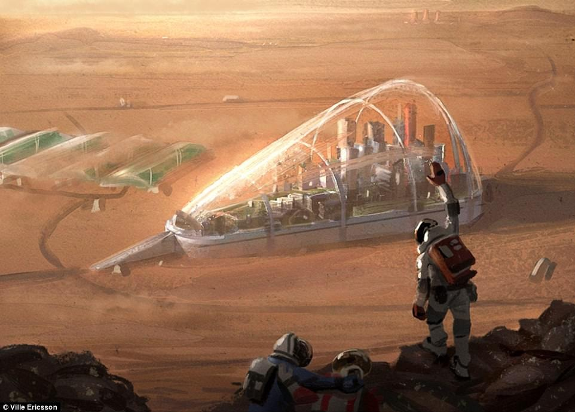
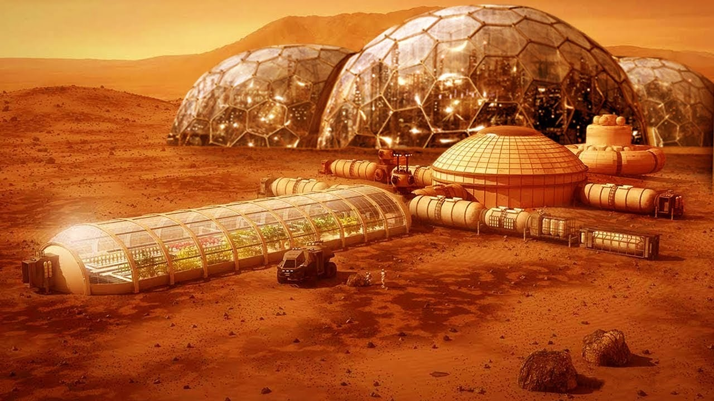
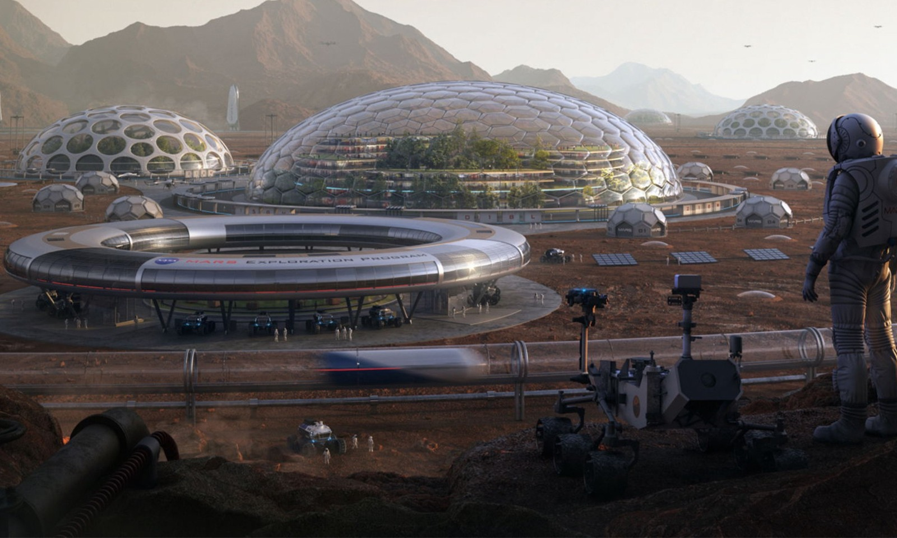

22.06.2020
 Biosphere XYZ will be realized with artificial intelligence supported system, robotic systems, IOT based Smart Home System, by understanding the importance of space studies for our world, creating a living space for living creatures in a geodesic dome in the Mars environment.
The purpose of the project is to constitute an area with suitable conditions for people living on other planets, with sustainability in the most challenging conditions. With our Smart home, Greenhouse and Lake system in the Biosphere XYZ, our team tends to establish a system that can fulfill the needs and operate without human assistance. in terms of demonstrating applicability and sustainability of our project.
25.08.2020
Fundamental aim behind this argument is highlighting the resilience aspect of our design. We want the house designed to withstand the hardest conditions. Since a design that challenges the most difficult conditions can be adapted to any environment in the world. We believe that the source of the projects is the needs and that the creation of the needs is possible in the most difficult circumstances. We think that the problems that will arise when difficult conditions trigger the environment of need will lead us to more innovative and creative solutions. It is our first goal to adapt the phenomenon of difficult conditions that we choose to create artificially to our project. We want to be able to choose a planet like Mars that is quite different from Earth in terms of living conditions. From our point of view, Mars conditions are to be able to make sense of the project holistically and to be able to predict the problems that may occur and solve them in the simplest way with teamwork.
25.08.2020
The world has been threatened with extinction many times since it existed. Human beings need to be prepared for the phenomenon of the unexpected end of the world. Any "end" scenario that might occur by human hand or as a result of natural disasters has led us to the search for a new planet. The threat of global warming as a result of people's increased carbon dioxide consumption, accidents resulting from Nuclear Studies, and natural disasters outside of human intervention are the factors that drive us to seek a new place outside the world.
25.08.2020
aaaaaaaaaaaaaaaaaaaaaaa